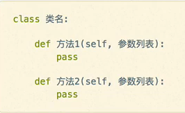

原文连接:https://www.cnblogs.com/hhs1998/p/11769879.html
Python基础学习笔记（四）
面向对象的三个基本特征：
- 封装：把客观事物抽象并封装成对象，即将属性，方法和事件等集合在一个整体内
- 继承：允许使用现有类的功能并在无须重新改写原来的类情况下，对这些功能进行拓展
- 多态性：派生类具有基类的所有非私有数据和行为以及新类自己定义的所有数据或行为，即子类具有两个有效类型：子类的类型及其继承基类的类型。对象可以表示多个类型的能力称为多态性
类与对象的概念：
类和变量是面向对象编程的两个核心概念
类：对一群具有相同特征（属性）或者行为（方法）的事物一个统称，抽象的，如：王者荣耀里的泛指的英雄
对象：由类创建出来的一个具体存在，可以直接使用，如：英雄中的李白
类的设计：
1.类型：满足大驼峰命名法（每个单词首字母大写，单词与单词之间没有下划线）
2.属性：事物具有什么样的特征
3.方法：事物具有什么样的行为
属性与方法的确定：
1.对对象特征的描述，可以定义成属性
2.对象具有的行为（动词），通常可以定义成方法
类的定义以及创建对象：
类定义的格式：

创建对象格式：
1.png)
实例属性：
通过"self.变量名"定义的属性，称为实例属性，也称为实例变量，每个实例包含类的一个单独副本
初始化（一般在__int__函数中）：self.实例变量名 = 初始值
其他函数中可以通过self访问：self.实例变量 = 值
创建对象实例，通过对象访问：obj1.实例变量名 = 值
例子：
class Person:
def __init__(self,name,age):
self.name = name
self.age = age
def say_hi(self):
print('您好!我叫%s'%(self.name))
person = Person('HHS','21')
person.say_hi()
print('今年{0}'.format(person.age))
输出：
您好!我叫HHS
今年21
类属性：
Python也允许声明属于类本身的变量，即类变量、静态属性
类属性属于整个类，不是特定实例的一部分，而是所有实例之间共享的一个副本
初始化（一般在类体中）：类变量名 = 初始值
类的访问：类名.类变量名 = 值
例子：
class Person:
count = 0
name = "HHS"
#test
Person.count += 1
print(Person.count) #1
print(Person.name) #HHS
p1 = Person()
p2 = Person()
print((p1.name,p2.name)) #('HHS', 'HHS')
Person.name = '华南理工大学广州学院'
print((p1.name,p2.name)) #('华南理工大学广州学院', '华南理工大学广州学院')
p2.name = '计算机科学与技术'
print((p1.name,p2.name)) #('华南理工大学广州学院', '计算机科学与技术')
p2.count += 1
print((Person.count,p1.count,p2.count)) #(1, 1, 2)说明：
类属性如果通过‘obj.属性名'访问，则属于该实例的实例属性，虽然类属性可以使用对象实例来访问，但这样容易造成困惑。所以建议不要这样使用，而是应该使用标准的访问方式：类名.类变量名
私有属性和公有属性：
Python类的成员没有访问控制限制，与其他面向对象的语言不同
通常约定两个下划线开头且吧不以两个下划线结束的属性为私有（private），其他为公共（public）
不能直接访问私有属性，但可以在方法中访问
class A:
__name = 'class A'
def get_name():
print(A.__name)
#test
A.get_name() #class A
A.__name #AttributeError: type object 'A' has no attribute '__name'
特殊属性：
以双下划线开始和结束的方法，称为特殊方法
常见的特殊方法：
object.__dict__ 对象的属性字典
object.__class__ 对象所属的类
class.__bases__ 类的基类元组
class.__bases__ 类的基类
class.__name__ 类的名字
class.__mro__ 方法查找顺序，基类的顺序
class.__subclasses__() 子类序列
class Person:
def __init__(self,name,age):
self.name = name
self.age = age
def say_hi(self):
print('您好!我叫%s'%(self.name))
person = Person('HHS','21')
print(person.__dict__) #object.__dict__ 输出：{'name': 'HHS', 'age': '21'}
print(person.__class__) #object.__class__ 输出：<class '__main__.Person'>
print(Person.__bases__) #class.__bases__ 输出：(<class 'object'>,)
print(Person.__base__) #class.__base__ 输出：<class 'object'>
print(Person.__name__) #class.__name__ 输出：Person
print(Person.__mro__) #class.__mro__ 输出：(<class '__main__.Person'>, <class 'object'>)
print(Person.__subclasses__()) #class.__subclasses__() 输出：[]
实例方法：
类方法的第一个参数一般为self，这种方法称为实例方法
格式：def 方法名（self，[形参列表]）：函数体
注意：第一个参数虽然为self，但是调用时，用户不需要传给该参数值（self相当于this）
class Person:
def say_hi(self,love):
# self.love = love 这句不写也可以正常输出
print('我喜欢的游戏为{0}'.format(love))
p = Person()
p.say_hi('自由幻想手游')
静态方法：
Python允许声明属于与对象实例无关的方法，称为静态方法，静态方法不对特定实例进行操作，在静态方法中访问对象实例会报错。静态方法通过装饰器@staticmethod来定义，其声明格式如下：
@staticmethod
def 静态方法名（[形参列表]）：
函数体
#静态方法一般通过类名来访问，也可以通过对象实例来调用
#如：类名.静态方法名（[实参列表]）例子：
class Temperature:
@staticmethod
def c2f(t_c): #将摄氏度转换为华氏温度
t_c = float(t_c)
t_f = (t_c * 9/5) + 32
return t_f
类方法：
Python也允许声明属于类本身的方法，即类方法。类方法不对特定实例进行操作，通过@classmethod来定义，第一个形参必须为类对象本身，通常为cls，格式如下：
@classmethod
def 类方法名(cls,[形参列表]):
函数体
#类方法一般通过类名来访问，也可通过对象实例调用
#格式如下
类名.类方法名([实参列表])例子：
class Foo:
classname = 'Foo'
def __init__(self,name):
self.name = name
def f1(self):
print(self.name)
@staticmethod
def f2():
print('static')
@classmethod
def f3(cls):
print(cls.classname)
__init__方法（构造函数）和__new__方法：
Python类中，可以定义特殊的方法：__new__方法和__init__方法
__new__是一个类方法，创建对象时调用，返回当前对象的一个实例，一般无须重载该方法
__init__是一个构造函数，用于执行类的实例和初始化工作，创建完对象后调用，初始化当前对象的实例，无返回值
__del__方法（析构函数）：
Python类体中，可以定义一个特殊的方法__del__方法
用于实现销毁类的实例所需的操作，如释放占用的非托管资源（打开的文件，网络连接等）
默认情况下，对象不再被使用时，__del__方法运行，由于Python解释器实现自动垃圾回收，无法保证这个方法何时运行
例子：
class Offer:
def __init__(self,name):
self.name = name
print('{0}太晚参加秋招'.format(name))
def __del__(self):
print('{0}炸了,只能去搬砖了'.format(self.name))
of1 = Offer('HHS')
del of1
__str__方法：
在Python中，使用print输出对象变量，默认情况下，会输出这个变量的引用对象时由哪一个类创建的对象，以及内存地址
如果希望print（对象变量），可以打印自定义内容，可以利用__str__方法
注意：此方法必须返回一个字符串
class Offer:
def __init__(self,name):
self.name = name
def __str__(self):
return '这是一个求Offer的对象'
of1 = Offer('HHS')
print(of1) #输出：这是一个求offer的对象
方法的重载：
在其他程序设计语言中，方法可以重载，即可以定义多个重名方法，只要保证方法签名唯一。方法签名包括三个部分：方法名，参数数量和参数类型
但Python本身为动态语言，方法的参数没有声明类型，参数的数量由可选参数和可变参数来控制，故Python对象方法不需要重载，定义一个方法即可实现多种调用，从而实现相当于其他程序设计语言的重载功能
继承：
派生类：Pyhon支持多继承，即一个派生类可以继承多个基类。
声明如下：
class 派生类名(基类1,[基类2,...]): #若无继承，默认继承object，派生类(object)
类体注意：声明派生类时，必须在其构造函数中调用基类的构造函数。
格式：基类名.__init__(self,参数列表)
例子：
class Person:
def __init__(self,name,age):
self.name = name
self.age = age
def say_hi(self):
print(self.name,self.age)
class Student(Person):
def __init__(self,name,age,stu_id):
Person.__init__(self,name,age)
self.stu_id = stu_id
def say_hi(self):
Person.say_hi(self)
print(self.stu_id)
p = Person('H',10)
p.say_hi()
stu = Student('HHS',21,'9199')
stu.say_hi()
输出：
H 10
HHS 21
9199
对象的引用：
对象的赋值实际上是对象引用，创建一个对象并把它赋值给一个变量，该变量是指该对象的引用其id()返回值保持一致
例如：a = b
对象的浅拷贝：
Python拷贝一般是浅拷贝，即拷贝对象，对象中包含的子对象不拷贝，而是引用一个子对象
- 切片操作 #a[::-1]
- 对象实例化 #list(a)
- copy模块的copy函数 #copy.copy(a)
对象的深拷贝：
如果要递归拷贝对象中包含的子对象，可以使用copy模块的deepcopy函数
import copy
a = [1,'hhs',[1,2,3]]
a1 = copy.copy(a)
a2 = copy.deepcopy(a)
print(id(a[2]),id(a1[2]),id(a2[2]))
#输出：5517400 5517400 7564344